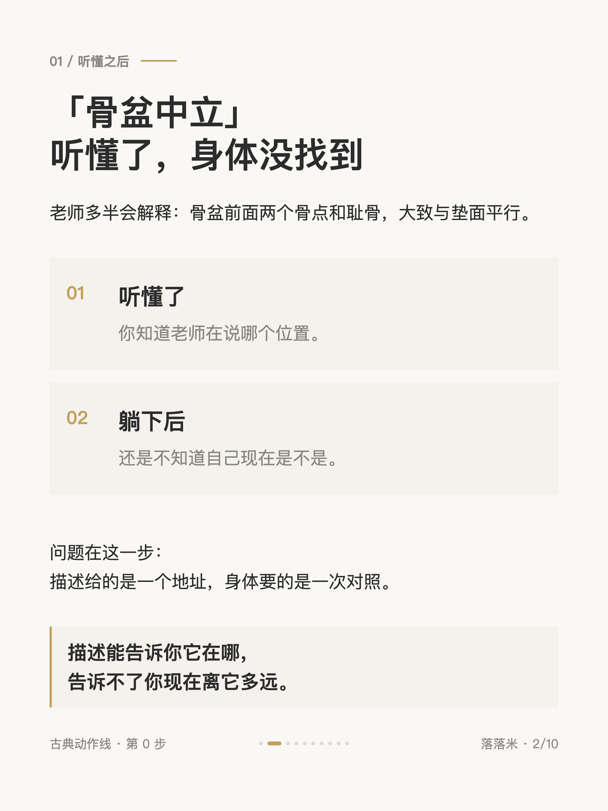
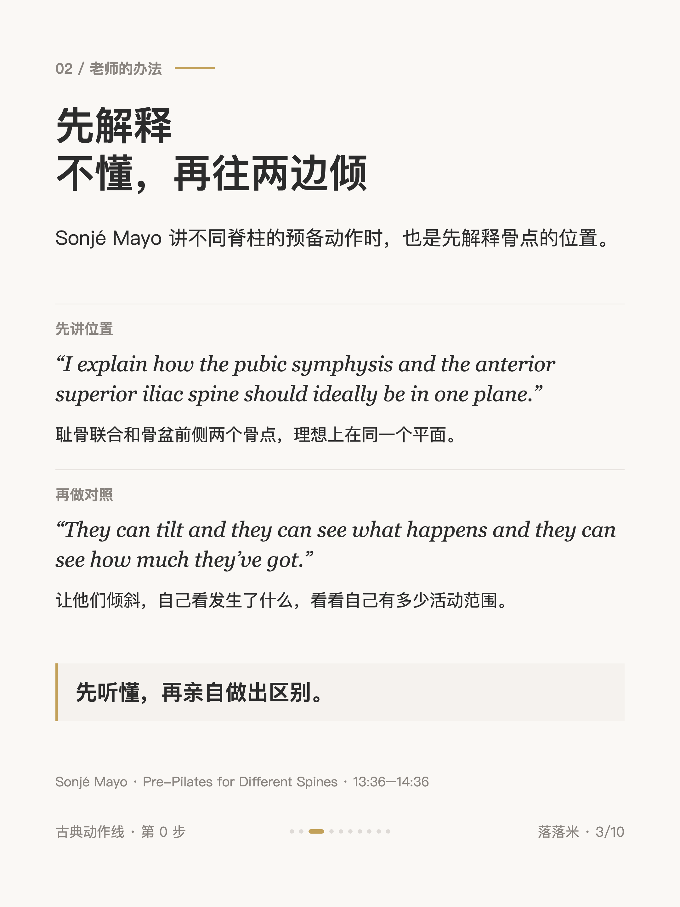
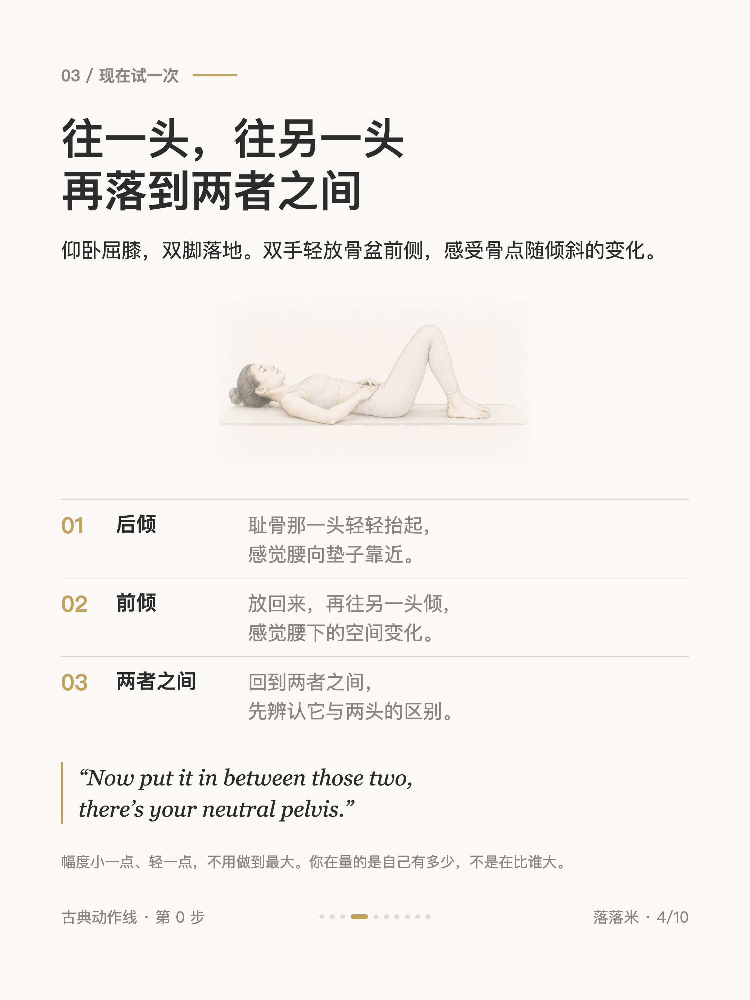
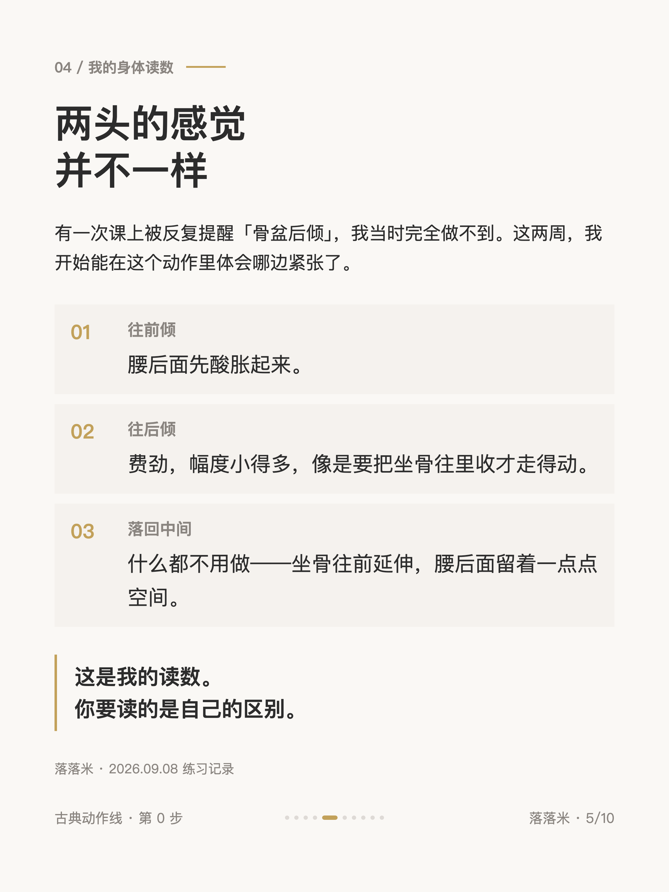
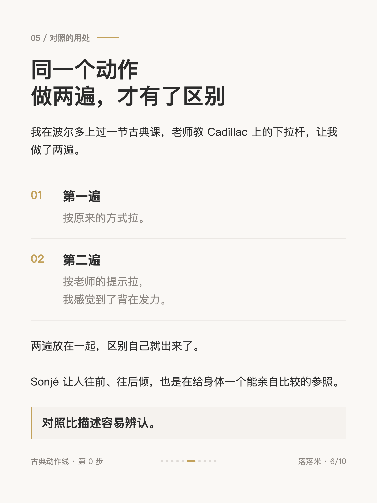
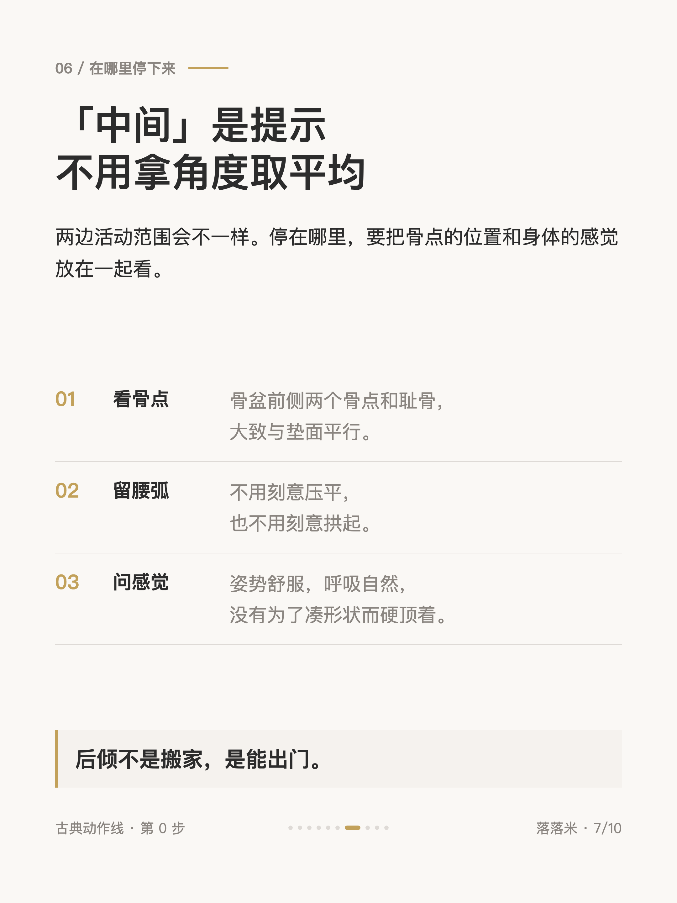
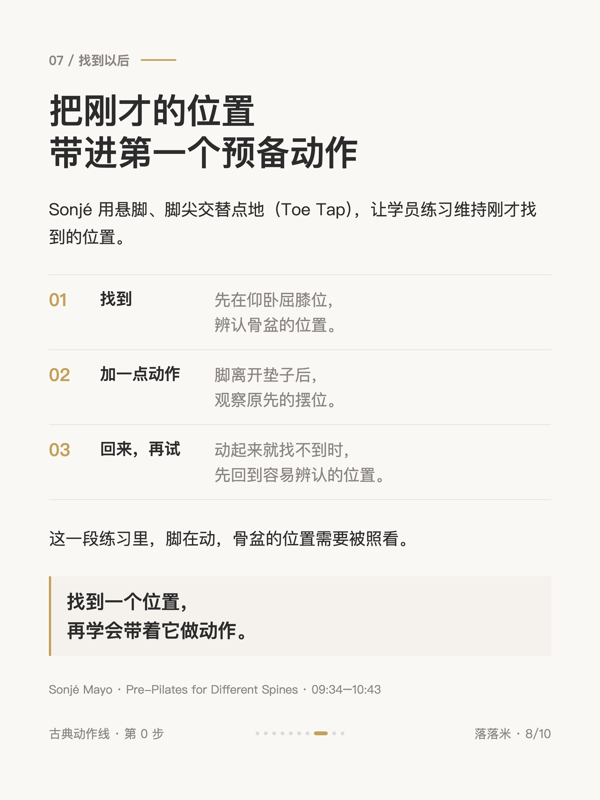
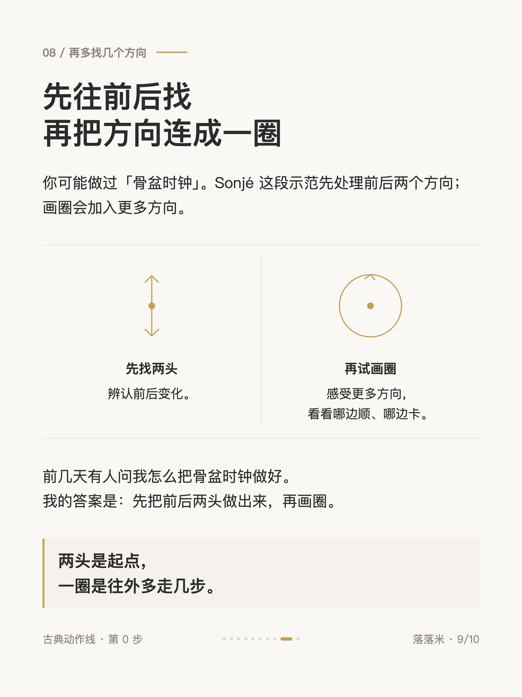
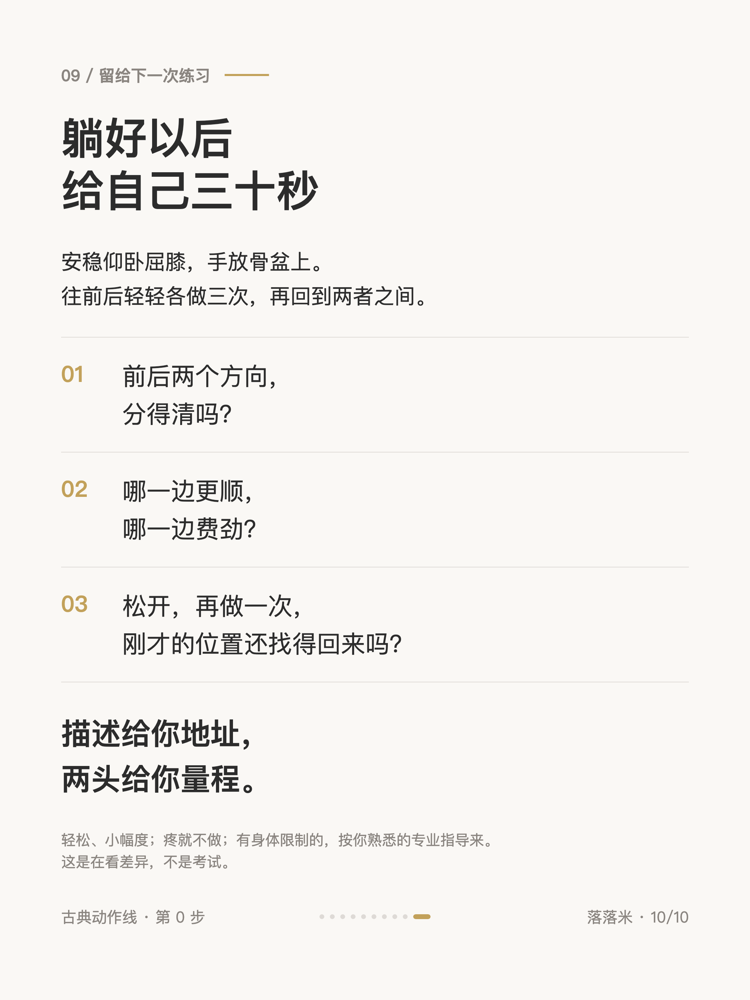

第 0 步 #002
普拉提的第 0 步：骨盆先往两边找

1 / 10

2 / 10

3 / 10

4 / 10

5 / 10

6 / 10

7 / 10

8 / 10

9 / 10

10 / 10
← 左右滑动浏览全部卡片 →
「骨盆中立」听懂了，身体没找到。描述给的是一个地址，身体要的是一次对照。
Sonjé Mayo 讲不同脊柱的预备动作时，也是先解释骨点的位置，再让人倾斜，自己看发生了什么。往一头，往另一头，再落到两者之间。
描述给你地址，两头给你量程。